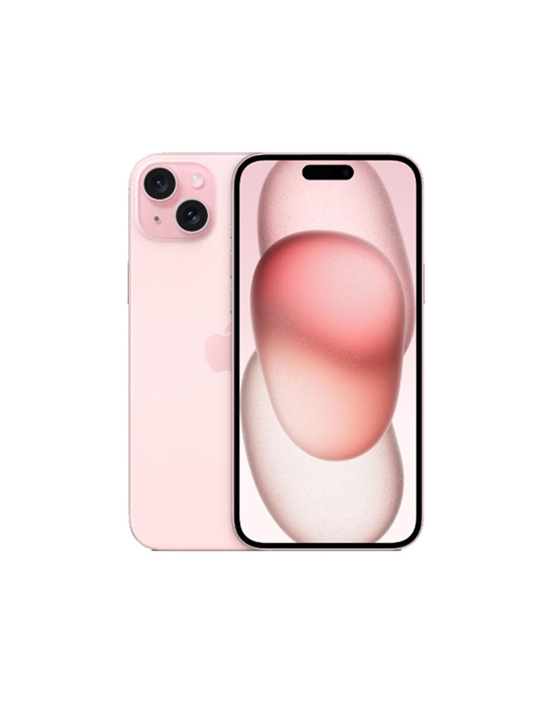

iPhone 15 Plus
Color: Black, Blue, Green, Yellow, Pink
Capacity: 128GB, 256GB, 512GB, 1TB
- Display: 6.7-inch (diagonal) all-screen OLED display
- Resolution: 2796-by-1290-pixel resolution at 460 ppi
- Chip: A16 Bionic Chip
- Main: 48MP Main: 26 mm, ƒ/1.6 aperture, sensor-shift optical image stabilization, 100% Focus Pixels, support for super-high-resolution photos (24MP and 48MP)
- Ultra Wide: 12MP Ultra Wide: 13 mm, ƒ/2.4 aperture and 120° field of view Ultra Wide: 12MP Ultra Wide: 13 mm, ƒ/2.4 aperture and 120° field of view